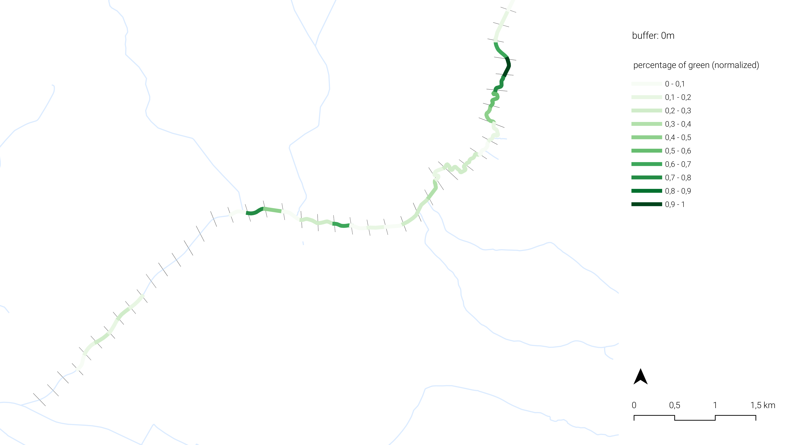

1 + 1[1] 2Project report of Group A
Vincent
Jasper
Youjin
Shreya
Vasileios
Vincent
Vasilius
Youjin
Vasilius
Shreya
Jasper
Youjin
Shreya
Through the heart of the city of Senica (a Slovak city, close to the Czech border) flows the Teplica. Due to economic pressures the stream has been heavily altered and is rendered invisible and insignificant in the urban landscape. Currently the Teplica is struggling with several problems, like poor flood handling, poor morphological and ecological quality, low flow during dry periods, an upstream dam and poorly utilized public space (Škrinár, 2025). The city of Senica is taking steps towards the restoration of this stream serving as an exemplary project within the ‘ReBioClim-project’. This EU-project aims to restore urban streams while focusing on both biodiversity, climate change and liveability in cities (City of Senica, 2024a).
While the Slovak water management company, SVP, focuses mainly on protecting the area against flooding due to heavy rainfall, more functional access to the water and improved water flow (City of Senica, 2024b), other focuses of the project include improving hydro morphology, ecology and diversity in urban areas and utilizing the stream for recreational purposes. Little attention is given to qualitative and experiential aspects such as human-nature connectedness.
In order to bridge this gap and ensure a lasting impact of the urban stream restoration, the enquiry in this report is focused on a way to determine potential for human-nature connectedness along the stream of Teplica.
Human-nature connectedness challenges the idea of human superiority over nature, while strengthening the outlook that humankind is a part of nature. Research has shown that this sense of connectedness cannot be created through education only (Spiller, 2024). Spatial composition plays an important role in this process where people must come into direct contact to build a strong relationship with their natural environments.
A theory that has gained recognition in recent decades and is often associated with human-nature connectedness is the biophilia hypothesis (Bhaskar, 2023; Lefosse et al., 2023). This hypothesis states that humans have an innate tendency to seek connections to nature (Grinde & Patil, 2009; Wilson, 1984). This connection is supported with evidence from multiple different fields of study (Grinde & Patil, 2009). The results from several of these studies show a strong connection between human-nature connectedness and an increased human health and wellbeing. This connection is not just physical, but also cognitive, emotional and biophysical (Ives et al., 2017).
Biophilic design, based on the biophilia hypothesis focuses on reinforcing the relationship between humans and the natural world through the creation or strengthening of biophilic places (Da Silva et al., 2021). Human-nature connectedness forms the starting point of this approach. It proposes to utilize green infrastructure to improve ecosystem health and human wellbeing. These places have shown great potential in different ways. They increase social interaction, as people view them as places of improved livability and sociability (Lefosse et al., 2023). Biophilic places also strengthen social cohesion, as they positively influence the perceived social cohesion, as well as facilitating more (semi-)social activities that strengthen community bonds. Another important effect of biophilic places, and the subsequent increase in regular experiences of nature, is that they raise environmental awareness and encourage a more sustainable way of living. Furthermore, on the long term biophilia can aid ecosystem conservation efforts (Bhaskar, 2023). People who are connected to nature and have a strong relationship to nature are more likely to participate in more sustainable behavior and to support ecosystem and biodiversity conservation efforts.
By determining how biophilic a place is, we can derive how much it improves the human-nature connectedness of the people living around it or visiting it. A biophilic place has a great impact on the people living around it, while a place that is not biophilic lacks this character. By determining the amount of biophilic integration, we can show which places have the largest need for improvement and which places are already performing well.
While biophilic integration mainly focusses on connecting people to nature, the importance of biodiversity cannot be overlooked (Lefosse et al., 2023). Streams are complex ecosystems and all the different present species contribute to the complex system that is this ecosystem (Bhaskar, 2023). Biodiversity therefore is of vital importance in protecting this ecosystem from collapse. In assessing the need for change in the areas around streams, it is therefore important to also look at indicators for biodiversity and ecosystem functionality.
By analysing biodiversity, we can determine where the creation or dedication of ecological networks is most necessary. So that they can provide more ecosystem services (Lefosse et al., 2023; Ranta et al., 2021a). Biophilic integration has shown great potential in reinforcing urban biomes that can act as biodiversity incubators through an increase in natural repopulation of plant and animal species (Bhaskar, 2023; Panlasigui et al., 2021).
Another way in which biodiversity and biophilic integration are linked is through microclimate ecosystem services (Lefosse et al., 2023). The amount of biophilic integration relies on the ecosystem services a local ecosystem can provide. Reinforcing ecological networks, increases ecosystem functionality and therefore the amount of biophilic integration. By having more diverse natural elements, both green and blue, containing multiple different species, the environmental impact of a place is enhanced. Different species have different cooling, air-, soil- and water purification, and wind regulating properties. With these species working together, and sometimes even positively affecting the properties of other species, their impact can grow even further. The more biodiverse a place is, the more biophilic it can be, and the more it can improve human-nature connectedness. By analyzing the performance of the existing microclimate we can again determine where action is needed most.
For the MCDA, the analyses are split into three main categories: quality of life, biodiversity and climate change. For each category a couple of analyses are done that give an indication of the human-nature connectedness around the stream. Based on that we can give an indication of where change is needed the most to improve this relationship.

The units are chosen as 200m intervals on the stream
To determine the amount of biodiversity of the area around the stream we are focusing on three aspects. The first two of those are related to the theory of island biogeography (MacArthur & Wilson, 2001). It states that the larger a green area is, the more biodiverse it will be (Conor & McCoy, 2013). This green area size is determined by two factors: the size of a single continuous green area and the interconnectivity between green areas. To determine the potential biodiversity around the stream, we are analyzing the percentage of green space around the stream, giving us an indication of the size of the green area. And we are analyzing the connectivity between the green areas. After analyzing this, we are also looking into the presence of different species in the area around the stream, as this gives us a more reliable indication of the actual biodiversity that is currently present.
The criterion used in this analysis is based on the Biophilic Planning Indicator (source to be added). The ratio of green space to total area serves as a proxy for assessing the amount of natural habitat near the Teplica stream. This method is also effective for comparing natural conditions across different spatial units.
To calculate this ratio, the buffer distance is a crucial factor. A buffer of 500 meters was applied, as this range effectively includes most of the surrounding green spaces. Green areas within this 500m buffer were intersected with the buffered spatial units, and a new column was created to represent the amount of green space within each unit.
This green area value was then joined to the buffer layer, enabling the calculation of the green-to-total-area ratio for each unit. The result, expressed as a percentage, is shown in the image below:

Since the green space percentages range approximately from 0% to 30%, the data was categorized into ten equal intervals, each representing a 3% range. A normalized value was also calculated using the formula.
Normalized value = (Percentage of green)/30
To create a normalized map for each stream unit, the line layer representing the Teplica stream was intersected with the buffered layer containing green area percentages. The corresponding values were then normalized using the formula above. The final map representing the green space percentage per unit is shown below:

However, this approach may not fully reflect the habitability for different species. The total size of contiguous green spaces might be more significant than the mere percentage within a buffer. A potential improvement would be to assign ecological value or rank to each green space patch and create a new indicator that reflects both the quality and amount of green space intersecting each unit.
Apart from the amount of green space, the proximity of green space to the stream is also an important factor. Even if there is a considerable area of green space, it becomes difficult to associate it with the stream if it is located too far away. This is especially critical for small animals such as frogs, for which direct connection between the stream and nearby natural areas is essential.
To address this, distance to green space is introduced as an additional criterion alongside the percentage of green area. While the percentage of green reflects the amount of natural habitat, the distance represents the connectivity between the stream and nearby green areas.
In this case, no buffer is needed, as the stream line itself serves as the reference for calculating distance. Using the processing tool (tool name to be added), the shortest distance from each stream unit to the nearest green space was calculated, based on the green space and Teplica stream layers.

For normalization, the following formula was applied:
Normalized value = 1 - (value - minimum) / (maximum - minimum)
Since the minimum distance was 0, the formula simplifies to:
Normalized value = 1 - (value / maximum)
This method produces a normalized score between 0 and 1, where a value of 1 represents the shortest distance (i.e., highest potential connectivity), and values closer to 0 indicate increasing distance from green spaces. This approach directly reflects the inverse relationship between distance and ecological connectivity, where farther distances correspond to lower connectivity potential. Compared to the previous quantile-based method, this continuous normalization may better capture the steep decline in connectivity that occurs with increasing distance from green spaces.
The final map representing the connectivity to green from stream unit is shown below: 
It is worth noting that the presence of ecological corridors near or within urban areas, is one of the important things in biophilic cities (source to be added). Species present in the are a direct indicator of the presence of varied habitats and ecological areas in the city. The findings from these could then be used to find areas lacking biodiversity in order to improve diversity in these areas.
A buffer of 2km is applied to this criterion considering the movement of fauna, which includes mammals and reptiles. This buffer area also includes parts of forest surrounding the east of Senica. Data on a total of 9 distinct faunal species (sourced from the Slovak atlas) was merged to form a layer containing count of each of the species. This was intersected with the spatial buffer to count the number of distinct species in each buffer unit. 9 indicates the highest diversity whereas 5 is the lowest count for diversity of species per unit.

Normalise value = (count – min count)/ (max count - min count)
The range of species count is classifed into ten quantile-based groups to maintain homogenity while comparing with other criteria. A score of 0 – 1.0 is assigned to each group ranging from lowest biodiversity count to the highest. The resulting classification is shown below.

The second category of evaluation is Quality of Life where different criteria have been created and evaluated to assess the current situation in Senica and also see if there is potential for future development. The criteria used to evaluate the situation are visualised in 4 maps: Proximity to Green Spaces Attractions between Activities and Parks Concentration of Points of Interest
This map illustrates the distribution of green spaces in the area and their proximity to surrounding buildings. The analysis was conducted using the Attraction Reach function in QGIS, which calculates how many parks are accessible from each building within a walking distance of 500 meters. This threshold is commonly used to represent a comfortable walking distance in urban planning. To enhance the accuracy of the analysis, greater weight was assigned to larger green spaces, based on their total area. This weighting approach is supported by the concept of biophilia, which emphasizes the human need for connection with nature. Research shows that larger green spaces tend to be more biodiverse, thereby offering stronger biophilic benefits. This justifies prioritizing them in the accessibility calculation. On the map, buildings are displayed in graduated grayscale: Darker buildings (black) indicate higher accessibility to multiple or larger green spaces. Lighter buildings signify lower access.
This data is further aggregated onto river segments as explained previously, to show how overall accessibility to green spaces relates to the river corridor. A 1000-meter buffer is used for this aggregation to encompass the majority of the built environment and to provide a broader view of green space attraction beyond immediate riverfront areas. The general outcome from the map is that there are not enough large green spaces close to the urban area.
The third criterion used in this analysis is the concentration of Points of Interest (POIs) along the Teplica stream. These POIs encompass a wide variety of features, including recreational activities, shops, monuments, benches, public artworks, and other amenities that contribute to the vibrancy of public space. To evaluate their impact, only POIs located within a 200-meter buffer along the stream were considered. Additionally, POIs were graded based on their proximity to the stream, with those closer to the watercourse given a higher value. This approach reflects their potential to draw people toward the stream, thereby fostering greater interaction between the urban population and the surrounding natural environment. To perform this analysis using the Attraction Reach function in QGIS, a series of points was generated along the geometry of the stream, spaced at 10-meter intervals. This resolution is appropriate given the scale of both the stream and the urban context. The Attraction Reach function was then applied to assess how many POIs each of these points could access, taking into account both distance and relative importance. On the resulting map, individual POIs are visible, with redder points indicating those closest to the stream. As with previous criteria, the data was then aggregated onto segments of the stream, allowing for a clearer spatial understanding of attraction levels. The outcome highlights a notable concentration of POI in the city center, suggesting that this area is already a focal point of activity. This also provides insight into potential zones for enhancing green infrastructure, where increasing greenery could further promote interaction with the stream and strengthen the human-nature relationship in urban settings.
The third category of evaluation is Climate adaptation. This set of criteria is used to understand how well the area can adapt to extreme changes in the weather conditions. For that three maps were created:
Permeability of the ground Flood Risk Land Surface Temperature
This criterion evaluates the ground’s ability to collect and absorb rainwater. To estimate this, it was assumed that all non-paved areas represent permeable surfaces capable of water infiltration. A land cover image of the city of Senica was used to identify paved areas, which were then isolated using the Raster Calculator tool in QGIS. To focus the analysis on areas relevant to water absorption near the stream, a 200-meter buffer zone was created around the stream network. The land cover image was then clipped to this buffer zone, narrowing the scope to a meaningful spatial scale. Using the Zonal Statistics tool, the proportion of permeable versus impermeable surfaces was calculated for different zones along the stream. This highlighted areas with higher degrees of paving, indicating lower permeability. Finally, the results were normalized and the scale was inverted—so that higher values represent greater permeability. These values were then aggregated to the corresponding river segments for further analysis. In the following maps the red color indicates the paved area that is later isolated into black and white (white - presence of pixels, black - absence of pixels). In the final map the buffered area is shown along with the aggregation on stream.
How many buildings are affected by q100 flood (unit buffer: 500m)
To assess the impact of flooding, the amount of buildings affected by a q100 was estimated. First the flood risk map was retrieved from the mpt.svp.sk gis server. Multiple types of flood risk maps were available, namely the q10, q100 and q1000 maps. These respectively indicate the likeliness of such a flood, for example the q100 indicates a flood that would on average occur every 100 years. The q100 was chosen, since it is still a relatively common occurrence, and the impact is significant enough to take measures against. The flood basin reaches at most 500 meters away from the banks of the Teplica, therefore the buffer was chosen as such.
Another important point to consider is that there are multiple ways to determine the impact of a flood. For example, the total land area affected, the amount of built-up land affected or the amount of buildings affected. Due to the urban structure of Senica, of which a large part consists of industrial buildings with large footprints, the total amount of buildings was chosen as a measure since it more closely measures the amount of people affected by a flood. A population density map would have been preferable, however, none was found at a sufficiently high resolution.

Surface temperature (unit buffer: 200m)
For the land surface temperature criterion the data was retrieved from the USGS Landsat 8-9 Level 2 satellite data. Particularly, the B10 band measures thermal infrared and is therefore representative of land surface temperature. The data is a snapshot of on a sunny day in may 2025.
The buffer was chosen according to a study by Wu, Zhijie & Zhang, Yixin. (2019) which found green spaces within 200m had a significant effect on urban land surface temperature.

Weighting of the criteria used in MCDA is carried out using the saaty matrix (Fuzzy AHP, n.d.). This is done separately for each criterion where the three sub-criteria within each criterion are weighed against each other based on its relevance to the overall objective of creation of a biophilic environment. It is also important to note that the weighting takes into account reliability of the data source for each sub criteria. Eigenvector(non-fuzzy) calculation method is used for all the weighting.
For the 1st criteria of Biodiversity, distance of green spaces from the stream is rated the highest as it has a direct impact on the stream health, and potential access of human and non-human species.

In Quality of Life, the proximity of points of interest such as cafes, park benches, etc from the stream is rated the highest since it has the highest potential of attracting people which ensures human-nature connectedness.

For Climate Adaptation, anticipated flood affected areas carry the highest weight as this directly affects the surrounding built environment. Higher risk of flood would mean people moving away from the stream which counters the objective of improved human nature connectedness with the stream.